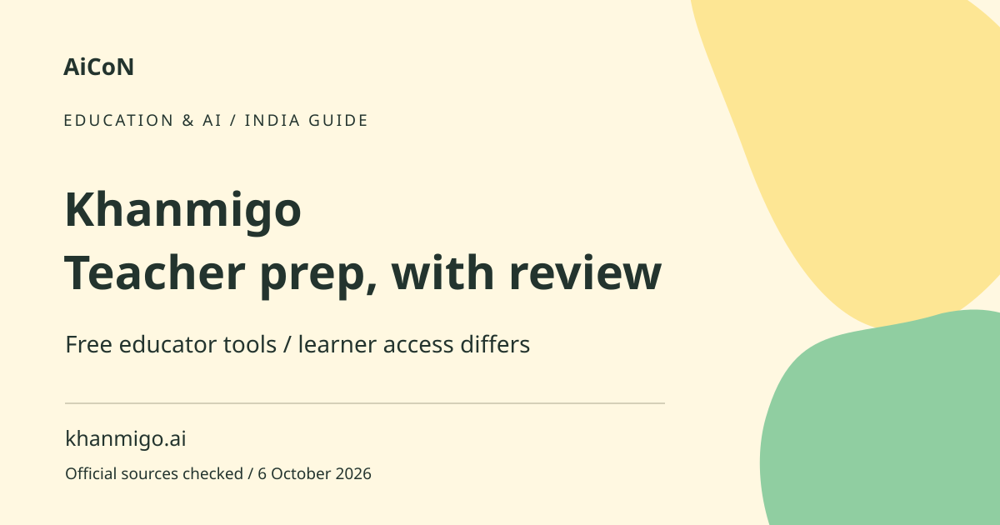

Khanmigo: free teacher tools in India, with limits
Khanmigo for Teachers offers free educator tools for tasks such as lesson planning. India access is described in Khan Academy's official updates. Free teacher tools are not the same as free learner tutoring.

What is the teacher version?
It helps educators prepare classroom material rather than automatically taking over teaching. A lesson draft, rubric or short assessment can save initial preparation time, but the teacher must check factual accuracy, level and curriculum fit. A rubric describes how work will be assessed; it should not be accepted unchanged if it mismatches the task.
How to use it, step by step
- Start at khanmigo.ai/teachers and check current educator eligibility and your country.
- Use a Khan Academy account and follow the teacher-role access process. Do not choose a paid learner plan simply because it appears beside the free tools.
- Read the language options available in your current teacher interface. Begin in a supported language you can evaluate confidently.
- Choose a preparation task and describe the class level, topic, learning objective and required format.
- Use anonymised examples instead of student names, grades or sensitive personal records.
- Read the generated material and compare it with your curriculum and reliable subject sources. Correct errors and inappropriate assumptions.
- Adapt the wording, examples and difficulty for your class. Check answer keys and any assessment criteria separately.
- Save your reviewed version and follow your institution's rules about AI use and student-data handling.
India, age and language eligibility
The teacher page describes adult educator eligibility in supported countries. The official blog records India availability in Hindi and English and later expansion to more than 180 countries and territories, with experimental languages. Experimental support is not a reliability guarantee. This guide does not promise Malayalam accuracy or every tool in every language.
Free teachers versus paid learners
The pricing page separates free teacher tools from paid parents/learners and district products. The teacher FAQ says parent/learner access requires a US billing address and US residence under its stated eligibility. Do not read a free educator offer as blanket learner access in India. Khan Academy's core learning library is a separate free resource.
Curriculum and classroom checks
A generic lesson may use a different syllabus, example or age level. Check whether it actually teaches your intended skill. For Kerala classes, adapt local context and language carefully, avoiding stereotypes. If a generated question has more than one defensible answer, revise the key or scoring rule before distributing it.
Student privacy
Avoid uploading identifiable student work without an appropriate authorised process. Remove names and unrelated details from examples. A classroom tool being free does not establish permission to send student data. Check your school's current requirements and the service's privacy terms before using records or individual learning needs.
Do not automate judgment
An AI-generated rubric or summary should not silently decide a student's grade. Check the actual work, reasoning and relevant accommodations. Explain criteria plainly and give students a fair opportunity to understand them. Generated summaries can omit context, so keep the original work available when reviewing feedback.
Frequently asked questions
Is learner tutoring free in India through this offer?
No. The free offer is for eligible educators; learner access has separate rules.
Is Malayalam guaranteed?
No. Verify the current supported or experimental language list and check output.
Can I use a lesson without checking it?
No. Review curriculum fit, accuracy and assessment answers.
Can I upload student records?
Only through an appropriately authorised privacy-safe process, not by default.
Official sources
Checked 6 October 2026. Expanded from an AiCoN short post delivered 6 October 2026. Portal screens and rules can change.